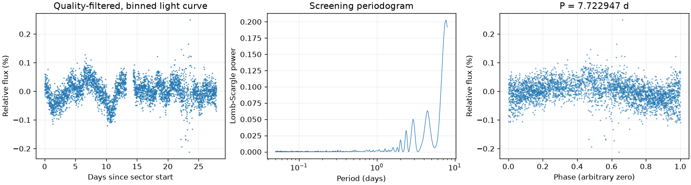
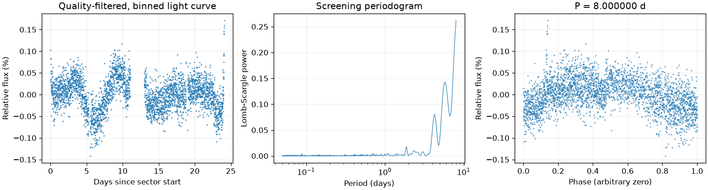
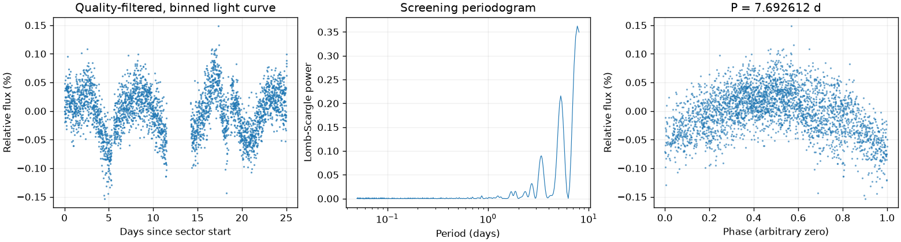
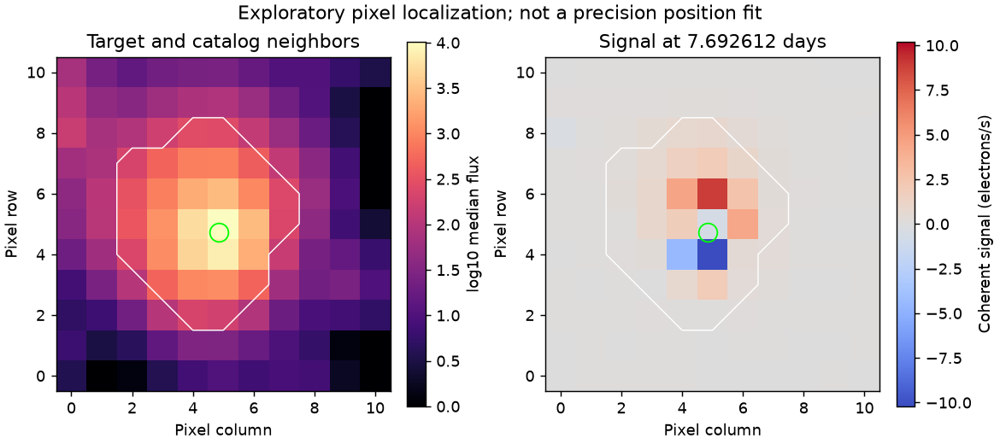

Sector 1 · LS 7.722947 天
BLS 辅助周期：7.681570 天
两种搜索得到相近周期；1% 比较容差不是周期误差。
前半段 LS：8.000000 天；后半段 LS：2.604721 天。
相对幅度估计 0.0550% · 有效点数 18277

Screening peak only; no correlated-noise false-alarm calibration or physical classification.
这是筛选报告，未确认新发现，也不能代替 VSX 提交材料。
图中依次为亮度随时间变化、候选周期强度和折叠后的重复形状。相位零点仅供展示；纵轴是相对通量，不是标定星等。
BLS 辅助周期：7.681570 天
两种搜索得到相近周期；1% 比较容差不是周期误差。
前半段 LS：8.000000 天；后半段 LS：2.604721 天。
相对幅度估计 0.0550% · 有效点数 18277

Screening peak only; no correlated-noise false-alarm calibration or physical classification.
BLS 辅助周期：6.385397 天
最强峰位于搜索边界，尚未测得有界周期。 两种搜索周期不同，尚未自动决定采用哪一个。
前半段 LS：6.773060 天；后半段 LS：8.000000 天。
相对幅度估计 0.0584% · 有效点数 15379

Screening peak only; no correlated-noise false-alarm calibration or physical classification. Strongest peak is at the search boundary; repetition does not establish a bounded period.
BLS 辅助周期：7.791552 天
两种搜索周期不同，尚未自动决定采用哪一个。
前半段 LS：6.816097 天；后半段 LS：6.748699 天。
相对幅度估计 0.0855% · 有效点数 15720

Screening peak only; no correlated-noise false-alarm calibration or physical classification.

像素峰值诊断不能替代精细来源拟合或正式查找星图。
{
"ra_deg": 329.626589361597,
"dec_deg": -59.897375133601,
"catalog_queries": [
{
"source": "VSX",
"checked_at": "2026-11-10T08:31:35.794694+00:00",
"url": "https://vsx.aavso.org/index.php",
"query": {
"params": {
"view": "api.list",
"ra": 329.626589361597,
"dec": -59.897375133601,
"radius": 0.04,
"format": "json"
}
},
"status": "completed",
"match_count": 0,
"note": "VSX neighborhood only; no-match is not novelty confirmation."
},
{
"source": "SIMBAD/VizieR/ADS",
"status": "not_run",
"note": "Requires detailed catalog/literature review; VSX alone is insufficient."
}
],
"vsx_neighbors": [],
"notes": [],
"errors": [],
"repeatability": {
"status": "boundary_limited",
"fractional_spread": 0.03980184074267843,
"tolerance": 0.05,
"note": "At least one strongest peak is at a search boundary; do not promote shared bounds as periodic evidence."
},
"localization": {
"status": "unresolved",
"target_pixel": [
4.843107274276821,
4.7310566121766975
],
"peak_pixel": [
5,
6
],
"target_peak_distance_pixels": 1.2786057441155694,
"neighbors": [],
"possible_contaminant": null,
"limitations": "Heuristic peak/harmonic matching; no PRF fit, localization uncertainty or correlated-noise significance. This is not a submission finding chart.",
"plot": "results/229804329/pixels.png",
"plot_sha256": "704794f9cd21448a2725ef34a5696234c4c64b02d1e8a384932446c4820805b2",
"pixel_input": {
"uri": "mast:TESS/product/tess2026137223500-s0104-0000000229804329-0306-s_tp.fits",
"sha256": "10bbed148508335863cb2f35265594c471c4201b759bf39b1dc0f951c6682e67"
}
},
"submission": {
"name": null,
"ra_deg": null,
"dec_deg": null,
"coordinate_source": null,
"coordinate_epoch": null,
"variability_type": null,
"period_days": null,
"period_error_days": null,
"epoch": null,
"epoch_time_standard": null,
"epoch_event": null,
"max_magnitude": null,
"min_magnitude": null,
"passband": null,
"magnitude_source": null,
"mean_magnitude": null,
"amplitude_magnitude": null,
"amplitude_passband": null,
"discoverers": null,
"references": null
}
}